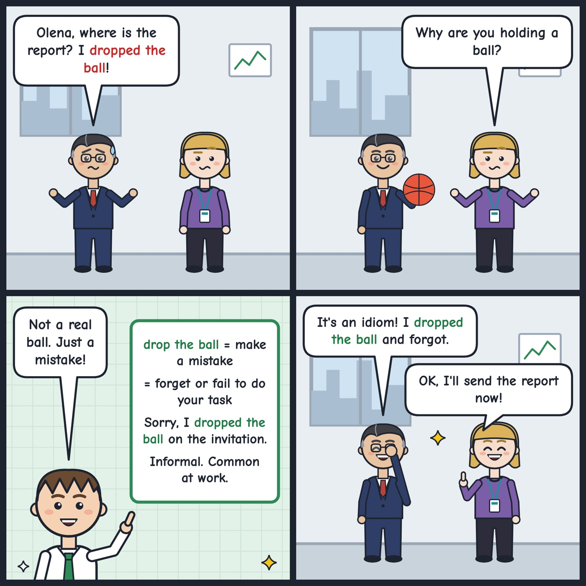

drop the ball
To make a mistake by forgetting or failing to do something you should do.
Sorry, I dropped the ball and forgot to send the invitation.
'Drop the ball' means to fail to do something you were responsible for. It is informal and common at work.

Your turn
Have you ever dropped the ball? Tell us!
Have you ever dropped the ball? Tell us!